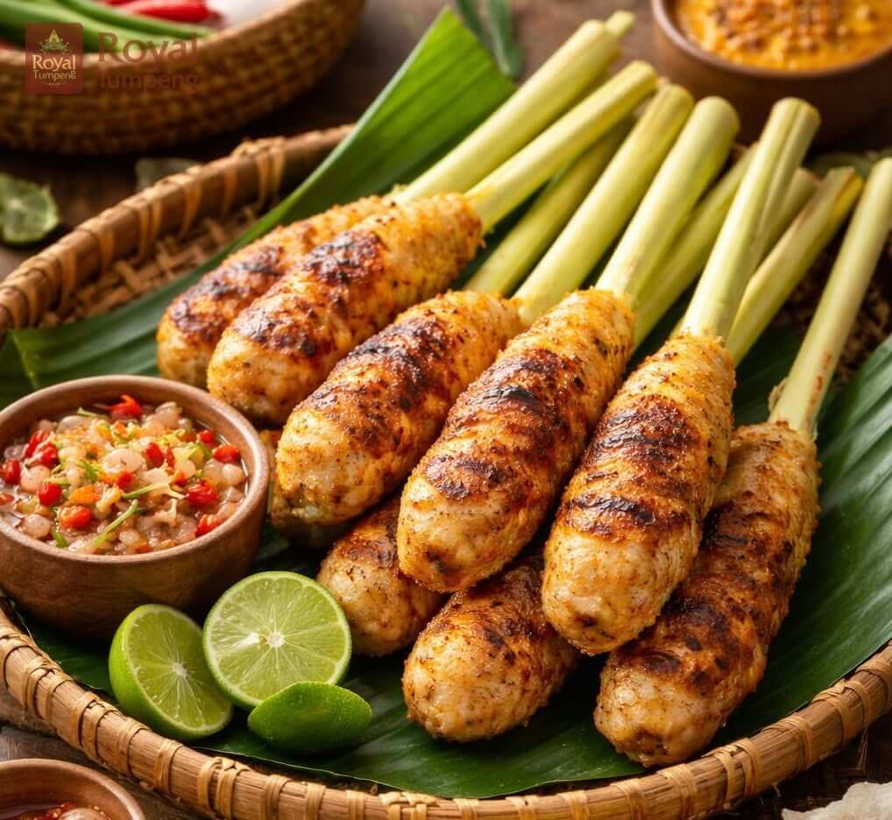
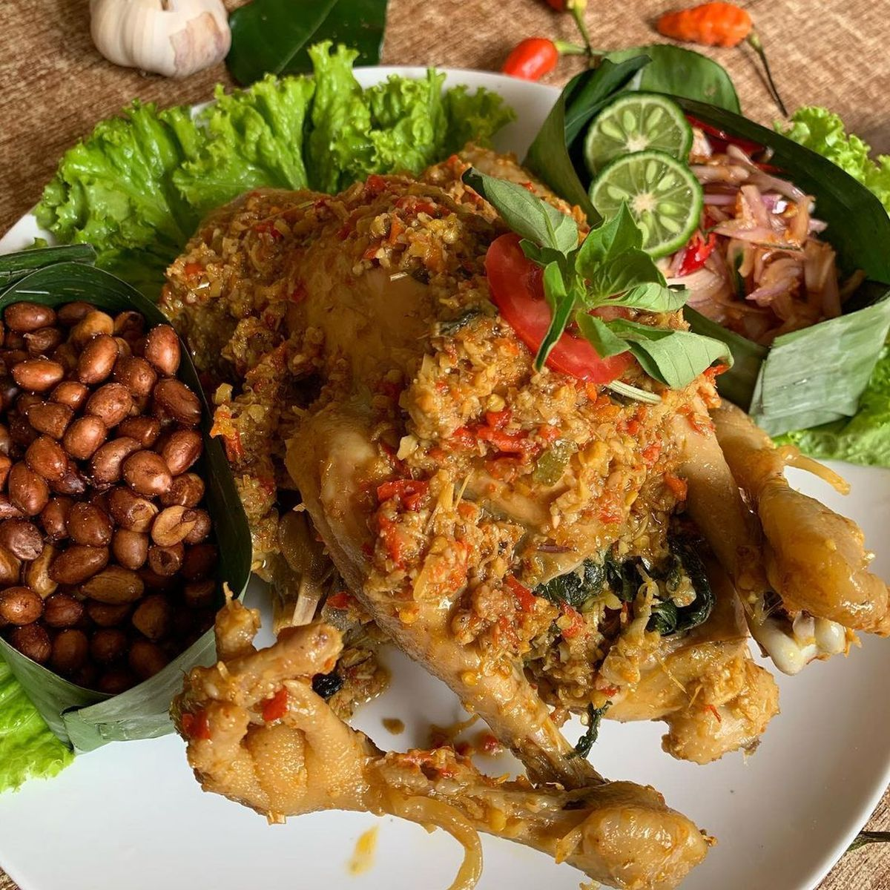

Balinese Local Foods
A taste of heaven in every bite
MY FAVORITE
Sate Lilit.
Sate Lilit is a delicious traditional minced meat satay from Bali. Its made from pork, fish, chicken, or beef, mixed with grated coconut, coconut milk, lemon juice, shallots, and pepper. The unique part of it is how it is wrapped around a bamboo, sugar cane, or lemongrass sticks, giving it an amazing aroma when grilled.


TRADITIONAL SPICE
Ayam Betutu.
Betutu is an iconic Balinese dish consisting of roasted or steamed chicken or duck in a very rich bumbu betutu. The complex spice mix includes shallots, garlic, turmeric, ginger, wild ginger, galangal, onion, and chili, making it an incredibly flavorful and spicy culinary experience.